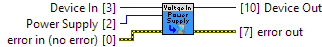

- Set to POWER_SUPPLY_OFF to turn off the supply to save power.

|
|
Device In Device # Identification |

|
|
error in (no error) error in can accept error information wired from VIs previously called. |

|
|
status status is TRUE (X) if an error occurred or FALSE (checkmark) to indicate a warning or that no error occurred. Right-click the error in control on the front panel and select Explain Error or Explain Warning from the shortcut menu for more information about the error. |

|
|
code code is the error or warning code. Right-click the error in control on the front panel and select Explain Error or Explain Warning from the shortcut menu for more information about the error. |

|
|
source source describes the origin of the error or warning. Right-click the error in control on the front panel and select Explain Error or Explain Warning from the shortcut menu for more information about the error. |

|
|
Power Supply The power supply value
1011_0 (ver: 100, 101, 102, 103) Voltage Input: Unsupported
1013_0 (ver: 800, 811, 820) Voltage Input: Unsupported
1013_0 (ver: 821, 823) Voltage Input: Unsupported
1018_0 (ver: 824, 825, 826) Voltage Input: Unsupported
1018_1 (ver: 826) Voltage Input: Unsupported
1019_0 (ver: 826) Voltage Input: Unsupported
1070_0 (ver: 826) Voltage Input: Unsupported
1010_0 (ver: 903, 904) Voltage Input: Unsupported
1018_2 (ver: 900, 901, 902, 903, 904) Voltage Input: Unsupported
1019_1 (ver: 903, 904) Voltage Input: Unsupported
1072_0 (ver: 903) Voltage Input: Unsupported
1073_0 (ver: 904) Voltage Input: Unsupported
1048_0 (ver: 100, 101, 102) Voltage Input: Unsupported
1051_0 (ver: 200, 201, 202) Voltage Input: Unsupported
1051_1 (ver: 300) Voltage Input: Unsupported
1051_2 (ver: 400, 401, 402) Voltage Input: Unsupported
1058_0 (ver: 100, 101) Voltage Input: Unsupported
1065_0 (ver: 100, 101) Voltage Input: Unsupported
1065_1 (ver: 100, 101) Voltage Input: Unsupported
1065_0 (ver: 100, 101) Supply Voltage Sensor: Unsupported
1065_1 (ver: 100, 101) Supply Voltage Sensor: Unsupported
1202_0 (ver: 100) Voltage Input: Unsupported
1203_0 (ver: 100) Voltage Input: Unsupported
1202_0 (ver: 120, 121) Voltage Input: Unsupported
1202_1 (ver: 123, 124) Voltage Input: Unsupported
1203_0 (ver: 120, 121) Voltage Input: Unsupported
1203_1 (ver: 123, 124) Voltage Input: Unsupported
1202_2 (ver: 200, 201, 202, 203, 204) Voltage Input: Unsupported
1203_2 (ver: 200, 201, 202, 203, 204) Voltage Input: Unsupported
HUB0000_0 (ver: 117, 118, 119) Voltage Input: Unsupported
SBC3003_0 (ver: 101, 102) Voltage Input: Unsupported
HUB0000_0 (ver: 121) Voltage Input: Unsupported
HUB5000_0 (ver: 102) Voltage Input: Unsupported
SBC3003_0 (ver: 108) Voltage Input: Unsupported
ADP1000_0 (ver: 104) Voltage Input: Unsupported
DAQ1000_0 (ver: 102, 103) Voltage Input: Unsupported
DAQ1000_0 (ver: 110) Voltage Input: Unsupported
DAQ1400_0 (ver: 112) Voltage Input: Def: POWER_SUPPLY_12V
SAF1000_0 (ver: 101, 102) Voltage Sensor: Unsupported
TMP1100_0 (ver: 103, 105) Voltage Input: Unsupported
TMP1101_0 (ver: 104, 106) Voltage Input: Unsupported
VCP1000_0 (ver: 100) Voltage Input: Unsupported
VCP1001_0 (ver: 100) Voltage Input: Unsupported
VCP1002_0 (ver: 106) Voltage Input: Unsupported |
||||||||||||||||
|
|
Device Out Same as Device In |

|
|
error out error out passes error or warning information out of a VI to be used by other VIs. |

|
|
status status is TRUE (X) if an error occurred or FALSE (checkmark) to indicate a warning or that no error occurred. Right-click the error out control on the front panel and select Explain Error or Explain Warning from the shortcut menu for more information about the error. |

|
|
code code is the error or warning code. Right-click the error out control on the front panel and select Explain Error or Explain Warning from the shortcut menu for more information about the error. |

|
|
source source describes the origin of the error or warning. Right-click the error out control on the front panel and select Explain Error or Explain Warning from the shortcut menu for more information about the error. |